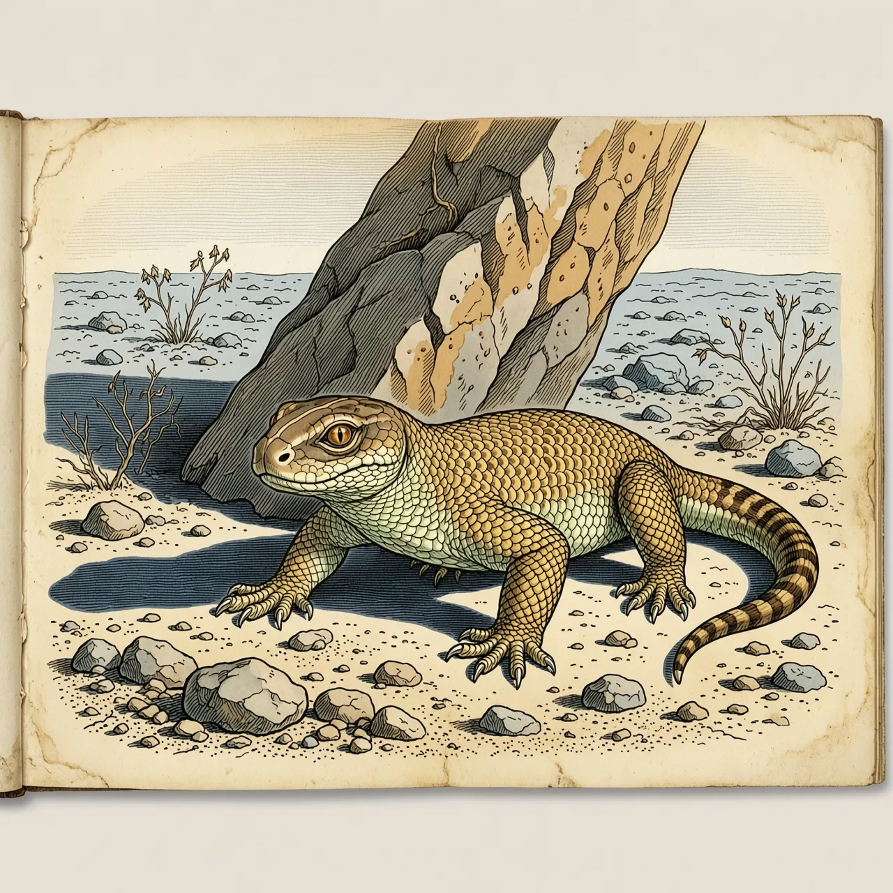
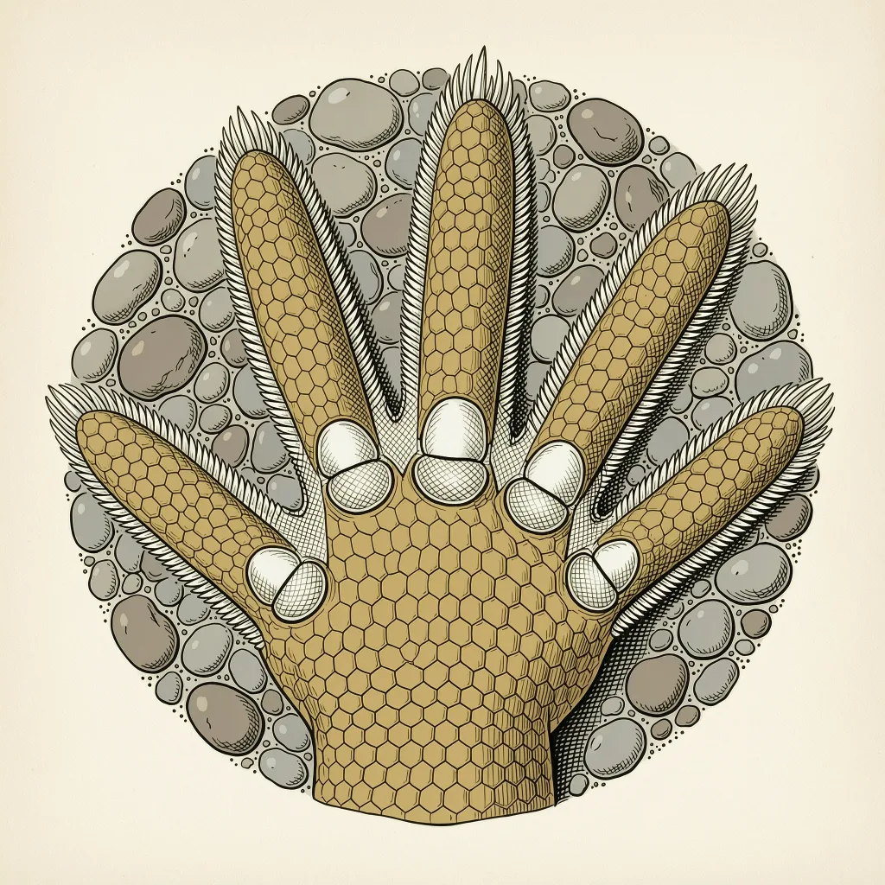

隐耳漠虎是古北界中西部荒漠里的地栖壁虎，分布在哈萨克斯坦、蒙古及中国内蒙古、新疆等地，白天藏身戈壁大石块下或洞穴内，沙漠中以长有白刺的沙丘为家。受困时它会发出像小鸟一样的吱叫，耳孔则隐在皮下。2023年它被列入中国『三有』名录。
躲开正午的暴晒，最省事的办法是找一块大石头，把自己塞进它底下。隐耳漠虎的日子就是这么过的：它的住处全贴着地面，戈壁滩的大石块下面，或者洞穴里。这个壁虎科漠虎属的物种分布很宽，从哈萨克斯坦、乌兹别克斯坦、土库曼斯坦、蒙古一路接进中国的内蒙古、宁夏、甘肃和新疆。换到流沙地带，它就以长有白刺的沙丘为家。模式产地记在 Bogdo 山和 Caspian 沙漠，一东一西。
在多数人的印象里，壁虎是安静的，隐耳漠虎是例外。受了困、被抓在手里时，它会发出一串尖锐的吱叫，像被捏住的小鸟。它的种名 pipiens 在拉丁语里意为『鸣叫的』，命名人 Pallas 在 1827 年据此立名。平时它靠跑应付危险：戈壁的碎石松散，抓不牢脚，它的趾缘带一排细密的栉状突，张开时增大与砂砾的接触。跑不脱、被按住的时候，它才叫出声。
隐耳漠虎的名字多少有点不老实。俗名『隐耳林虎』带着一个林字，可它跟林子无缘，住处是干旱的戈壁和沙丘；『隐耳』倒是写实，耳孔隐在皮下，从外面看不到开口。2023 年，这只戈壁里的『林虎』被收进《有重要生态、科学、社会价值的陆生野生动物名录》，简称『三有』名录。名单落在纸上，石头底下的日子照旧。
